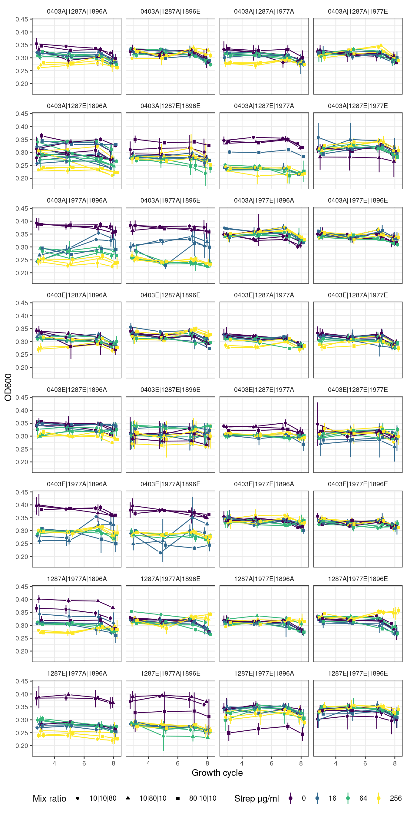

Formatting and plotting optical density data
1 Introduction
In the main experiment, species pairs, trios, or quartets were serially passaged every 48 hours to fresh media containing the necessary concentration of streptomycin. The experiment was terminated after 8 of these growth cycles (16 days). The optical density (600 nm) was measured on alternating serial passage/growth cycles. This notebook contains results/plots for the optical density data.
2 Setup
2.1 Libraries
2.2 Global variables
2.3 Read optical density data
pairs <- readr::read_tsv(here::here(data_raw, "20240606_pairs", "optical_density_formatted.tsv"))
tqs <- readr::read_tsv(here::here(data_raw, "20240829_tqs", "optical_density_formatted.tsv")) %>%
mutate(well = paste0(str_extract(well, "[A-H]"),
str_pad(str_extract(well, "\\d+"), 2, side = "left", pad = "0")))2.4 Read and format community information
pairs_comp <- readr::read_tsv(here::here("data", "communities", "experiment_design", "pairs_sample_composition.tsv")) %>%
dplyr::mutate(name = paste(str_to_upper(evo_hist), str_remove(strainID, "HAMBI_"), target_f*100, sep = "_")) %>%
dplyr::select(community_id, name) %>%
dplyr::group_by(community_id) %>%
dplyr::mutate(id = 1:n()) %>%
dplyr::ungroup() %>%
tidyr::pivot_wider(names_from = id, values_from = name ) %>%
dplyr::rename(a = `1`, b = `2`) %>%
mutate(a_sp = paste0(str_split_i(a, "_", 2), stringr::str_extract(str_split_i(a, "_", 1), "^.{1}")),
b_sp = paste0(str_split_i(b, "_", 2), stringr::str_extract(str_split_i(b, "_", 1), "^.{1}")),
a_f = str_split_i(a, "_", 3),
b_f = str_split_i(b, "_", 3)) %>%
arrange(community_id) %>%
mutate(n_species = 2,
sp = paste(a_sp, b_sp, sep = "|"),
f = paste(a_f, b_f, sep = "|"))Rows: 96 Columns: 4
── Column specification ────────────────────────────────────────────────────────
Delimiter: "\t"
chr (3): community_id, evo_hist, strainID
dbl (1): target_f
ℹ Use `spec()` to retrieve the full column specification for this data.
ℹ Specify the column types or set `show_col_types = FALSE` to quiet this message.trios_comp <- readr::read_tsv(here::here("data", "communities", "experiment_design", "trios_sample_composition_wide.tsv")) %>%
dplyr::mutate(n_species = 3,
sp = paste(a_sp, b_sp, c_sp, sep = "|"),
f = paste(a_f, b_f, c_f, sep = "|"))Rows: 96 Columns: 11
── Column specification ────────────────────────────────────────────────────────
Delimiter: "\t"
chr (7): well, a, a_sp, b, b_sp, c, c_sp
dbl (4): microcosm_id, a_f, b_f, c_f
ℹ Use `spec()` to retrieve the full column specification for this data.
ℹ Specify the column types or set `show_col_types = FALSE` to quiet this message.quart_comp <- readr::read_tsv(here::here("data", "communities", "experiment_design", "quartets_sample_composition_wide.tsv")) %>%
mutate(n_species = 4,
sp = paste(a_sp, b_sp, c_sp, d_sp, sep = "|"),
f = paste(a_f, b_f, c_f, d_f, sep = "|"))Rows: 64 Columns: 14
── Column specification ────────────────────────────────────────────────────────
Delimiter: "\t"
chr (9): well, a, a_sp, b, b_sp, c, c_sp, d, d_sp
dbl (5): microcosm_id, a_f, b_f, c_f, d_f
ℹ Use `spec()` to retrieve the full column specification for this data.
ℹ Specify the column types or set `show_col_types = FALSE` to quiet this message.2.5 Subset to pairs, trios, and quartets
Also we take the mean and std dev for the 2 replicates of each condition
pairs_combo <- left_join(pairs_comp, pairs, by = join_by(community_id, n_species)) %>%
summarize(OD_mn = mean(OD),
OD_sd = sd(OD),
.by = c(sp, f, transfers, strep_conc)) %>%
mutate(strep_conc = as.factor(strep_conc))
trios_combo <- left_join(trios_comp, tqs, by = join_by(well, n_species)) %>%
summarize(OD_mn = mean(OD),
OD_sd = sd(OD),
.by = c(sp, f, transfers, strep_conc)) %>%
mutate(strep_conc = as.factor(strep_conc))
quart_combo <- left_join(quart_comp, tqs, by = join_by(well, n_species)) %>%
summarize(OD_mn = mean(OD),
OD_sd = sd(OD),
.by = c(sp, f, transfers, strep_conc)) %>%
mutate(strep_conc = as.factor(strep_conc))3 Plotting optical density
Here we will plot optical density over the batch growth cycles. For ease of visualization we exclude the first transfer because the OD was very high, and this happened in all conditions. We focus on the subsequent transfers because the OD has mostly stabilized after the first growth cycle.
3.1 Plotting function
plot_od_grid <- function(df, remove_first_cycle = TRUE, ncol){
pj <- ggplot2::position_jitterdodge(jitter.width=0.0,
jitter.height = 0.0,
dodge.width = 0.5,
seed=9)
df %>%
dplyr::filter(if(remove_first_cycle) transfers > 2 else transfers > 0) %>%
ggplot2::ggplot(aes(x = transfers, y = OD_mn, color = strep_conc, group = interaction(strep_conc, f))) +
ggplot2::geom_linerange(aes(ymin = OD_mn - OD_sd, ymax = OD_mn + OD_sd, color = strep_conc), position = pj) +
ggh4x::geom_pointpath(aes(shape = f), position = pj, mult = 0.2) +
#ggplot2::geom_point() +
#ggplot2::geom_line(aes(linetype = f)) +
ggplot2::facet_wrap(~sp, ncol = ncol) +
ggplot2::labs(x = "Growth cycle", y = "OD600", color = "Strep μg/ml", shape = "Mix ratio") +
ggplot2::scale_color_viridis_d() +
ggplot2::theme_bw() +
ggplot2::theme(strip.background = element_blank(),
legend.position = "bottom",
axis.text = element_text(size = 8),
strip.text = element_text(size = 8))
}3.2 Pairs
fig_pairs <- plot_od_grid(pairs_combo, remove_first_cycle = TRUE, ncol = 4)
# ggsave(
# here::here("figs", ".svg"),
# fig01,
# width = 7,
# height = 12,
# units = "in",
# device = "svg"
# )
#
# ggsave(
# here::here("figs", ".png"),
# fig01,
# width = 7,
# height = 12,
# units = "in",
# device = "png"
# )
3.2.1 Pairs with first growth cycle

3.3 Trios
fig_trios <- plot_od_grid(trios_combo, remove_first_cycle = TRUE, ncol = 4)
# ggsave(
# here::here("figs", ".svg"),
# fig01,
# width = 7,
# height = 12,
# units = "in",
# device = "svg"
# )
#
# ggsave(
# here::here("figs", ".png"),
# fig01,
# width = 7,
# height = 12,
# units = "in",
# device = "png"
# )
3.3.1 Trios with first growth cycle
3.4 Quartets
fig_quarts <- plot_od_grid(quart_combo, remove_first_cycle = TRUE, ncol = 4)
# ggsave(
# here::here("figs", ".svg"),
# fig01,
# width = 7,
# height = 12,
# units = "in",
# device = "svg"
# )
#
# ggsave(
# here::here("figs", ".png"),
# fig01,
# width = 7,
# height = 12,
# units = "in",
# device = "png"
# )